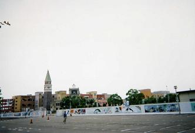
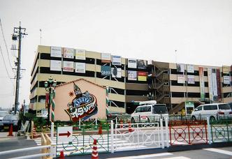
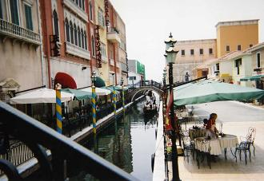
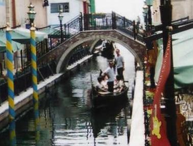
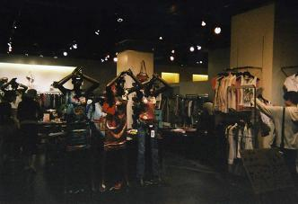
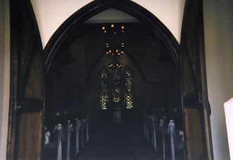

愛知万博と同じ2005年4月25日に名古屋港にお目見えした『名古屋イタリア村』。
万博の閉幕（9月25日）とともになくなっちゃうのでは？なんて噂もありましたが、まだ工事中の箇所があるということ、クーポン券の有効期間が一年間ということから、期間限定のイベントではないと私は判断しました。（＾ｖ＾
遠くからお車でいらっしゃる方にはちょっとややこしいので道案内は控えさせていただきますが、ナビを搭載されている方は【名古屋市港区港町1－15】とインプット願います。（助手席の彼女や奥様へのインプットでは行き着けるかどうか保証の限りではありません＾ｍ＾；）
公共交通機関では名古屋駅から地下鉄『東山線』にて栄まで行き、『名城線』名古屋港行きに乗り換えて名古屋港へ…
地下鉄駅構内から道案内がありますので矢印に沿ってお進み下さい。（地上に出て5分足らずで行けます）

地下鉄名古屋港駅から最短出口を出てクランク状に進む途中で、駐車場越しに見えるのがイタリア村の全容で、正直なところそんなに広いところではありません。
ショッピング好きな方には時間がどれだけあっても足りないかもしれませんが、普通に見て食事をして周る分には半日がいいところかな…？という感じで、各種クルージング、歩いて行けるポートタワー、水族館などもあります。

平面駐車場の奥にはこんな立体駐車ビル（普通車30分ー￥100）もあり、お買い物・食事料金などによってサービスがありますので、￥2500以上のレシートが手に入りましたら駐車券と一緒にインフォメーションへ…
この駐車ビルからは本館まで歩いて直接入れます。
平日、または18：00以降の入村は無料ですが、土・日・祝祭日の18：00までは中学生以上は￥1000の【名古屋イタリア村クーポン】を購入しなければ入村できません。
が、このクーポン券。
一年間有効だそうで、買い物やゴンドラの乗船（オープン特別プライス中はないかも…）時に得点があるようです。
イタリア村はゴンドラが行き交う水路を隔てて三階建ての本館（Piccola Venezia)と、ヴェネチアン・ガラス美術館などのある戸別店舗のエリアに別れていますが、もうひとつ『サンタマリア・チャペル』のあるクレール ベイサイドイタリア村エリアも工事が完了すればかなり広くなるのではないかと思われます。


ゴンドラの乗船料は大人一人￥500で５～６人乗りです。
左の写真のようなヴェネチアの運河を再現したといわれる水路を右の写真のようなゴンドラに乗って、丸い形の橋をみっつくぐってゆったりと漕ぎ進んで行きますが、距離はそんなに長くありません。（＾。＾；
写真の左側にあるのが本館で、一階には小さな店が沢山あって、私も気がつかなかったのですが市場もあるんです。
この市場の海側には『ヴァッカロ ヴェネチア』というシーサイドガーデンリストランテがあり、魚市場で買った食材を持って行くとシェフがお好みの料理に調理してくれるのだそうです。
日本初上陸のブランドを扱っている店も沢山あり、ウィンドショッピングだけでも楽しめそうです。

写真は二階のエスカレーター前にあるレディースファッション『レグレープ』です。
店の中に向けてフラッシュを焚くのはちょっとはばかられ、このように暗くなってしまいましたが、マネキンが身につけているものがとてもお洒落にコーディネイトされていました。（私も２０年前だったら欲しい物ばかりだったかも。。。）
さて、人がどんどんエスカレーターで上がっていくので一体何があるのだろう？と上がっていった三階には、『ピッコラヴェネチア』という大きなイタリアンオーダーバイキングのレストランがあり、１時間￥1800（子供￥1000）のランチバイキングがお目当てのようで、11：00の開店を前に行列ができていました。
ちなみに、ランチバイキングは11：00～16：00まで。
デザートバイキングは14：00～17：00まで60分 \1500（子供￥1000）。
ディナーバイキングは17：00～23：00まで90分 ￥2800（子供￥1500）。
６００席のスペースで、８０種類以上のメニューがお楽しみいただけるようです。

本館から出てこんなものをみつけました。
この白いもの。。。なんでしょう？
イタリア村では８月３１日まで毎日雪が降るのだそうで、ちびっ子が喜んで小さな雪だるまらしきものをいっぱい作ってました。
その雪だるまを写してきたかったのですが、残念ながらフィルムの残量が残り一枚で、こんなことならば無駄にどうでもいいような花なんて撮るんじゃなかった…と、今更後悔しても後の祭り。（ _w_;
11:00 13:00 15:00 17:00 19:00 の二時間おきに１０分ほど雪が降るそうで、天候によっては時間の変更や中止という場合もあるとか…
また、この雪の降る『カフェ・サンマルコ』前では11:00頃からサンマルコ楽団によるオーケストラの演奏もあるそうですが、本館でゆっくりし過ぎたようで見逃してしまいました。（＞ｖ＜
８月２１日までは夜は打ち上げ花火も毎日20:00頃からあるそうで、これもちびっ子たちには嬉しい企画です。

橋を渡ってクレール ベイサイドイタリア村のエリアに入りますと、６月４日にオープンしたサンタマリア・チャペルがあります。
まだオープン前だとばかりに思っていたのですが、先日たまたま見ていたＴＶニュースで挙式を済ませたばかりのカップルが出ており、先月の初めにはもうできていたと知って
…〆（，，メモメモ
そして、フィルムはここでなくなってしまいました。
チャペルから奥はクレール ベイサイドイタリア村となる大きな建物が建設中で、ゴンドラ乗り場のある橋を渡って戻って来ますと、別館の三階にヴェネチアンガラス美術館があります。
大人￥800 大・高校生￥500 中・小学生￥300 で入館できますが、ゴンドラばかり見ていてうっかり通り過ぎてしまいました。（＾ｍ＾；
お腹も空いていたんです。。。ぼそっ
パスタを食べようかピザを食べようかと二軒の店を行ったり来たりして、どちらも食べられる『デュエ レオーニ』に入りました。
店の外からガラス越しにピザ生地を伸ばすお兄さんが見えており、
「もしかして、あのピザ回しをやるかな？」
なんて、ちょっと期待してしまったのですが、そんな悠長なことをしていられるほど暇ではないようで次から次へと丸い生地を伸ばしていました。
店内に入ると、赤々と火の入った窯からふつふつとチーズの焼けるピザを取り出しているのが目の前で見ることができ、チーズと独特なスパイスの香りが立ち込めています。
「おおーイタリアだー！」
って、私まだイタリアには行ってません。。。（_w_；
一階は厨房だけのようで、屋内とテラス席があるので屋内を希望し、ウェイトレスさんに案内されて冷房の効いた二階のスミッコの席に着き、きのこと生ハムのピザと冷たいパスタを注文し終わると、
「お飲み物はどういたしましょう？」
と聞かれて、娘は
「私はいらない」
なんて言っていたのですが、
「ここに書いてあるモルツなんてのは？」
メニューの上から目だけ覗かせて娘の顔をちろり。
「あ！それならいいかも」
焼きたてのピザを丸いカッターでさくさく切って、あったかいうちに食べなくちゃ…と、とろーりと伸びるチーズを落とさないように口元へ持っていってパクッ！
「まいう～♪」Ψ（⌒～⌒）
冷たいビールとアツアツのピザでクピクピ モグモグやっていますと、ギターを抱えた太っちょな男性が階段を上がってきまして、カンツォーネ（だと思う）を歌い始めました。
マイクもなく、気にしなければその存在すら忘れてしまそうなくらい、押し付けがましさのない歌声が心地よく響いていたかと思うと、あきらかに歌っている途中というところでピタリと歌声が止まり、階段からの手すりに片手をかけて、男性はじっとしています。
どうしたのだろう？
と見ていると、奥の方の席の女性が携帯をかざしており、カメラに向かってポーズをとっているのだとわかり、やがて男性は何事もなかったように歌の続きをうたい始めました。
階段の下から大きな音が聞こえてきた時には、またもや歌うのを中止して手すりから下を覗き込み、あきれたように首を大きく横に振って、再び歌い始めるというアドリブ的なパフォーマンスを盛り込みます。
またしても、無駄に使ってしまった何枚かのフィルムが悔やまれ、娘の携帯で写してもらうように頼んだのですが、調子が悪いということで画面が真っ黒になってしまいました。（＾へ＾；
私の携帯はというと、文字通りの「不携帯電話」で家に置いてきており、しかもカメラ付ではないので、カメラ付の電話にチェンジすることを真剣に考えてしまった瞬間です。
太っちょの男性は三曲歌って入って来たときと同じようにふらりと帰って行き、私たちも間もなく優雅な昼食を終えて炎天下の外に出ました。
面白い店がありました。
映画などでしか見たことのないような舞踏会のような衣装をまとったマネキンが何体か飾ってある店があり、何を売っているのかと覗いてみますと、仮面舞踏会などで使う両端が上にツンと尖った眼元だけのマスクが、様々なデザインを施されてガラスのケースの中に並んでいます。
中まで入っていく勇気もなく外から見ただけなので、他にどんな商品が置いてあったのかわかりませんが、興味のある方は覗いてみて下さい。（＾ｖ＾
本館と同様にレディースファッション店が主流を占めて、ランジェリーからバッグ、アクセサリーに小物といった具合に何でも揃っています。
メンズ物の店もかなりあるのですが、女性物に比べるとどうしても色彩的に負けてしまい、興味がないということもあってついつい無視してしまったようです。（＾ｍ＾；
ベビー用品は本館にしかなかったような気がしますが、キッズファッションの店もまあまああり、日本の製品とは一味違う色使いが見てるだけでも楽しいです。
他にも雑貨物からサッカーグッズ、陶器にヴェネチアングラスの店などもあり、イタリア土産の店もありました。
『ネゴッツィオ オリーブ』と『ネゴッツィオ ボーノ』には、ちょっとしたギフトに使えそうなパスタのセットやクッキーなどが豊富に置いてあり、オリジナルのおもちゃ、装飾品などもいろいろ いろいろ。。。
愛知万博人気キャラクターのモリゾーとキッコロのグッズも置いてありました。（*＾_＾*）
帰り際にヒマワリの花で飾った花馬車を見ることもできました。
ゴンドラ同様これも大人一人￥500ですが、現在(2005年7月中旬）のところオープン特別プライスだそうで、本来の料金は￥800となるようです。
全館が完成するとゴンドラや馬車で巡るコースも今よりも長くなりそうなので、その頃には本来の料金になってしまうのではないかと思われます。
作成:2005-08-02
コメントはこちら